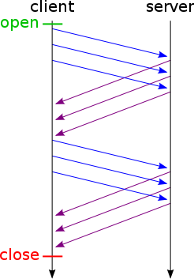

Update!
Another way to handle embedded resources is by including or excluding them explicitly with query parameters. For instance below we could pass a parameter like?include_cast=true to the /movie endpoint. It’s possibly a more pragmatic way to customize the response.
The False Premise
If you aren’t familiar with resource embedding, it’s where an API response contains related information that a client might want. An example would be to include cast information in a response about a movie:
{
"title": "Stalker",
"year": "1979",
"director": "Andrei Tarkovsky",
"language": "Russian",
"_embedded": {
"cast": [
{ "name": "Alisa Brunovna Freyndlikh", "dob": "December 8, 1934" },
{ "name": "Aleksandr Leonidovich Kaydanovskiy ", "dob": "July 23, 1946" },
{ "name": "Otto Alekseevich Solonitsyn", "dob": "August 30, 1934" }
]
}
}We’re taught that including embedded information saves the client from having to make additional HTTP requests. The only way to get more information is to make a fresh request, right?
Not necessarily. For the past fifteen years the mainstream web development community has unfortunately neglected the HTTP spec. You see, by 1999 people had been using and learning from HTTP 1.0 for a few years. It had become obvious that the one-resource-per-request design was awkward. There is overhead to making web requests, from setting up TCP to querying DNS. When possible it makes sense to reuse an existing HTTP connection. Hence the HTTP 1.1 design committee invented the keep-alive header and HTTP pipelining.
 With pipelining you load several requests into one connection. Sadly its support has been halting and incomplete because of subtleties about slow requests holding up later ones (the “head of line” problem). That subtlety means you shouldn’t pipeline all assets by default. In a way browsers threw out the baby with the bathwater by not allowing you to pipeline selectively.
Although we can’t use real HTTP pipelining to put related requests together (at least not until HTTP/2), there is another trick we can use, and it’s a trick we can put into server middleware so it’s transparent to our application code. But before getting into that, why bother?
The Problems with Embedding
What are the downsides with embedding, anyway? It provides helpful information and anticipates the client’s needs. If someone asks you to pass the salt, why not pass the pepper too?
In the movie example the related cast information was no big deal. Pretty small. However in real requests this additional data can be large, and it’s not always needed. Also including related data is a slippery slope. We could include reviews, showtimes, historical popularity, and similar movies. There’s a limit to how much you choose to include.
What some people tend to do is create multiple similar endpoints. In our example these endpoints might include a movie-with-its-reviews and a movie-with-cast. Even when developers don’t intentionally start out designing the system this way its evolution often forces the design. Developers end up creating convenience endpoints to serve particular pages. After all, the app should be efficient!
However it’s not without problems. First, the backend gets harder to maintain. It accumulates similar controller actions with more tests and docs. Second, the chosen subsets are arbitrary. For (n) related datasets there are (2^n) possible embedded-subsets. So the client gets stuck with either more or less data than it needs. Third, independently limiting or filtering each embedded list is hard and might be implemented idiosyncratically and poorly in the app.
The Solution
The way to avoid these problems and keep the client and server light and flexible is through relational batch requests. Relational in the sense that we create self-contained root-level resources that accept query parameters to filter them appropriately. Batched in the sense that we combine requests for related resources into a single HTTP request – a spontaneous request that the application code doesn’t need to name or prepare for in any special way.
If we have an identifier (in this example numerical) for a movie imagine we could send all these requests at once
Single request:
GET /movies/12
GET /cast?movie=12
GET /reviews?movie=12In fact you can, using a server middleware such as arsduo/batch_api which replays the batched requests one by one locally on the server and combines the results. Your server code can’t tell the difference. And each request is allowed to use unrestricted HTTP, with headers and params and all. I’ll show you my idea for a clean Angular module to send the batch requests. But first let’s consider a knee-jerk reaction to these kind of routes.
Why are we routing to /cast?movie=12 rather than /movies/12/cast? The former is not as conventional, at least in the Rails community. But remember this is an API. The endpoint URLs are not providing a visible sense of structure in a visitor’s address bar. I don’t see any benefits from nesting cast under movies/:id. All it does is make the queries less expressive. If you want a list of cast filtered in some other way you will need the root-level cast route anyway, and now you have two routes to maintain.
Note that relational batch requests can’t handle every kind of request efficiently. For instance aggregate queries should happen on the server. If you want the average rating of a movie it’s overkill to request /reviews?movie=12 (even in parallel) and do the math when a fast backend database could do that. Unless someone develops a kind of “APIQL” like l/reviews?movie=12&select=avg(rating). Interesting, does anyone know of a library for this?
To make it easy to consume batched APIs we could turn to Angular with its tools to abstract the traditional browser Javascript platform. One might write an extension of Angular’s $resource object that is built from other resources. The key is easy composition like this:
b = batch('/batch_endpoint', {
movie: ['get', $resource('/movies/:movieId', { movieId: '@id' }) ],
cast: ['query', $resource('/cast?movie=:movieId', { movieId: '@id' }) ],
reviews: ['query', $resource('/reviews?movie=:movieId', { movieId: '@id' }) ]
});
// b.execute() returns
// { movie: { ... }, cast: [ ... ], reviews: [ ... ] }It could work by briefly registering an $http request interceptor and running the quoted verb against each resource. The interceptor will sniff the urls and headers and save them to hidden variables. Then when execute() is called on the batch it will make a request to the batch endpoint properly formatted for the batch middleware.
Ultimately the client interface will be most pleasant if it is compositional. In other words if I can take regular resources and build more interesting things out of them recursively. There’s nothing stopping a batch from containing other batches. Or containing a paginated resource rather than a plain one. Finally notice how in this approach the client is in charge of the format of the response. It can pull together any resources and assign them to arbitrary keys. I think with this approach we can create nimbler APIs that are fun to use and easy to maintain without sacrificing performance.